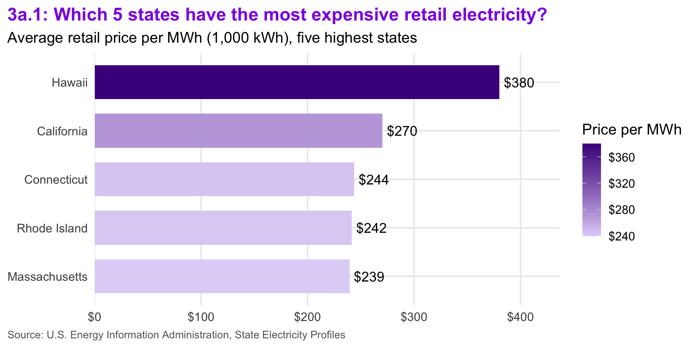
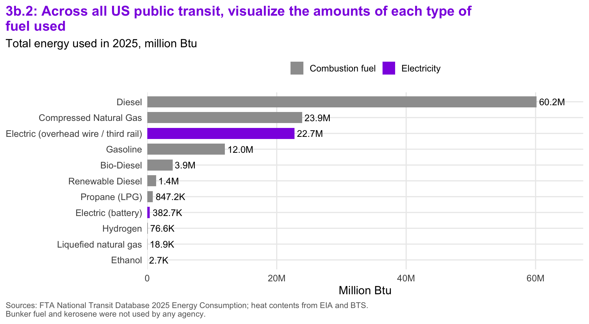
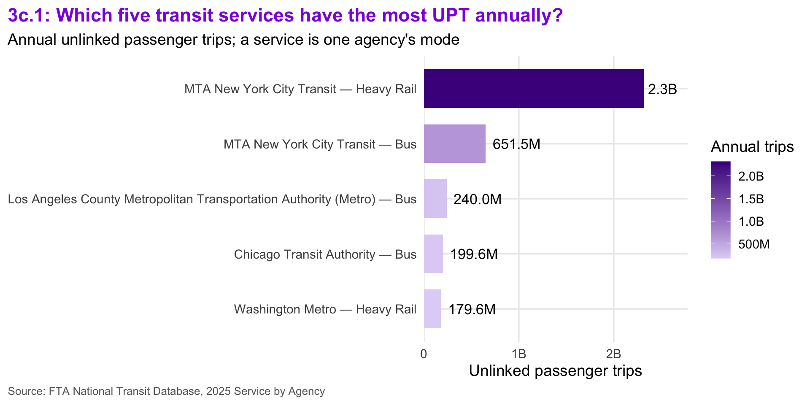
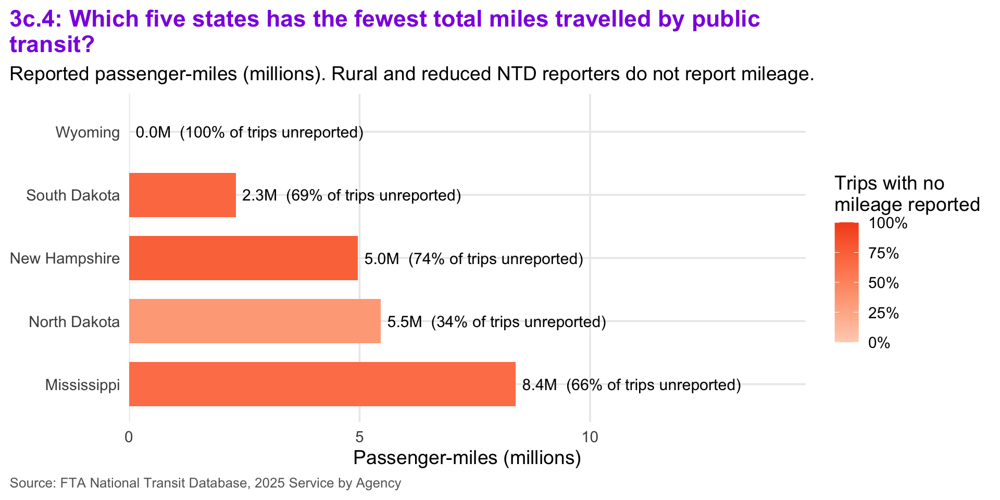
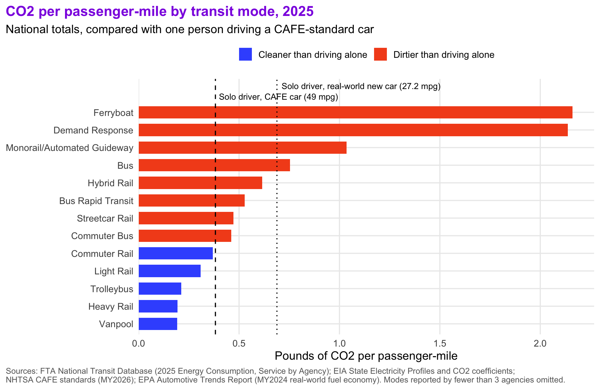
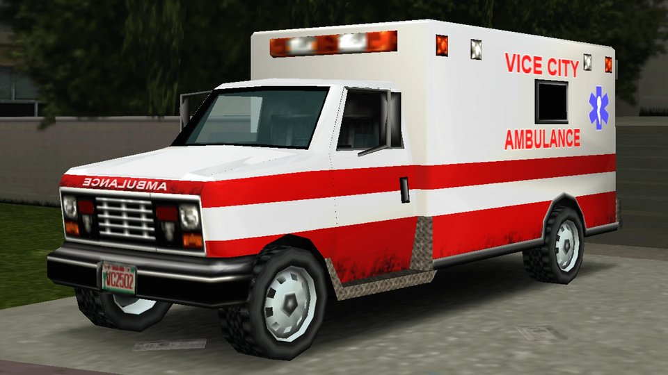
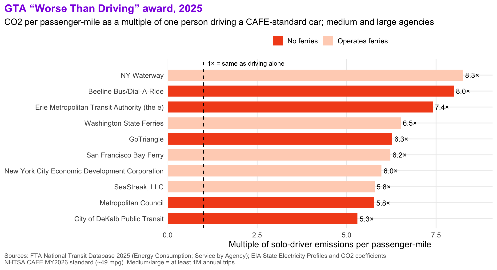

Mini-Project 02 - Identifying Environmentally Responsible US Public Transit Systems
Author
jonchan420
Hi viewers, this is my second mini project. Before you immediately assume this is all vibe coded slop, this layout you see is just an homage to the upcoming GTA 6 video game’s color scheme…where I did ask for assistance on coding the CSS file for mp02 (It looks cool tho, right?)
With that out of the way… Welcome to the Green Transit Alliance (GTA). While this page’s color scheme and layout is an homage to the upcoming GTA 6 video game, our mission here is strictly ENVIRONMENTAL. We want to evaluate the true ecological performance of the USA’s public transportation agencies.
If we were to just look at the highest and lowest carbon footprint, this analysis would be over and we’d call the MTA the worst since they generate the most emissions. However it goes way deeper, and that MTA data may actually be a good thing, wanna find out why? The answer will be in the press report!
Beyond that, buses, trains, and ferries all use vastly different amounts of energy and serve extremely different passenger volumes, meaning a sprawling subway system will naturally emit more total carbon than a local small town’s bus fleet. To help level the playing field, we’ll integreate the 2025 National Transit Database (NTD) fuel and ridership data (funnily enough I applied for an MTA job that has to do with ridership data) with state-level electricity emissions profiles.
By standardizing our evaluation around a core mteric of pounds of CO2 per passneger-mile and grouping agencies by size, we can accurately measure actual efficiency. Based on this Value Index, we are proud to present our 2026 awards, including the Greenest Transit Agency, Most Emissions Avoided, and our inaugural Battery-Bus Pioneer award. There may be some secret awards as well (remember to put funny ones such as the gas guzzler or literally the worst transit agency ever)
Data Acquisition
State Electricity Profiles (Task 1a)
Show All Code
get_eia_sep <-function(state, abbr) {library(tidyverse)library(stringr)library(httr2)library(rvest)library(fs) state_formatted <-str_to_lower(state) |>str_replace_all("\\s", "") dir_name <- fs::path("data", "mp02") file_name <- fs::path(dir_name, state_formatted) fs::dir_create(dir_name, recurse =TRUE)if (!fs::file_exists(file_name)) { BASE_URL <-"https://www.eia.gov" RESPONSE <-request(BASE_URL) |>req_url_path("electricity","state", state_formatted ) |>req_headers(`User-Agent`="Mozilla/5.0 (Macintosh; Intel Mac OS X 10.15; rv:149.0) Gecko/20100101 Firefox/149.0" ) |>req_retry(max_tries =4, ) |>req_perform(file_name)resp_check_status(RESPONSE) } TABLE <-read_html(file_name) |>html_element("table") |>html_table() |>mutate(Item =str_to_lower(Item))if ("U.S. rank"%in%colnames(TABLE)) { TABLE <- TABLE |>rename(Rank =`U.S. rank`) } CO2_MWh <- TABLE |># nolint: object_name_linter.filter(Item =="carbon dioxide (lbs/mwh)") |>pull(Value) |>str_replace_all(",", "") |>as.numeric() PRIMARY <- TABLE |>filter(Item =="primary energy source") |>pull(Rank) RATE <- TABLE |>filter(Item =="average retail price (cents/kwh)") |>pull(Value) |>as.numeric() GENERATION_MWh <- TABLE |># nolint: object_name_linter.filter(Item =="net generation (megawatthours)") |>pull(Value) |>str_replace_all(",", "") |>as.numeric()data.frame(CO2_MWh = CO2_MWh,primary_source = PRIMARY,electricity_price_MWh = RATE *10, # / 100 cents to dollars &# * 1000 kWh to MWHgeneration_MWh = GENERATION_MWh,state = state,abbreviation = abbr )}EIA_SEP_REPORT <-map2(state.name, state.abb, get_eia_sep) |>list_rbind()# Washington, DC is home to WMATA (300M+ annual trips) but is not in# `state.name`. EIA publishes a DC profile in the same format, so we add it to# a separate grid table used only for the emissions join. The 50-state# EIA_SEP_REPORT above is kept as-is for the state-level EDA questions.GRID_CO2 <-bind_rows( EIA_SEP_REPORT,get_eia_sep("District of Columbia", "DC"))
1a: Loaded all the EIA electricity profiles.
The data tells us one page per state from the government’s energy agency. Basically how ‘dirty’ each state’s electricity is and what it costs. This matters because electric trains and buses are only as clean as the power plants that power them (You are only as strong as your weakest link). DC was also added because the metro is huge.
NTD Energy Usage (Task 1b)
Show All Code
load_ntd_energy <-function() {library(readxl)library(httr2)library(tidyverse)library(fs)# Create 'data/mp02' directory if not already present DATA_DIR <- fs::path("data", "mp02") fs::dir_create(DATA_DIR, recurse =TRUE) NTD_ENERGY_FILE <- fs::path(DATA_DIR, "2025_ntd_energy.xlsx")if (!fs::file_exists(NTD_ENERGY_FILE)) {library(httr2)request("https://www.transit.dot.gov/") |>req_url_path("sites","fta.dot.gov","files","2026-09","2025 Energy Consumption_260806.xlsx" ) |>req_headers(`User-Agent`="Mozilla/5.0 (Macintosh; Intel Mac OS X 10.15; rv:149.0) Gecko/20100101 Firefox/149.0" ) |>req_perform(NTD_ENERGY_FILE) }if (file.info(NTD_ENERGY_FILE)$size <1e4) {cat("I was unable to download the NTD Energy File. Please try again.\n")stop("Download failed. Please delete the corrupted file by running `unlink('data/mp02/2025_ntd_energy.xlsx')` and try again.") # nolint: line_length_linter. } to_numeric_fill_0 <-function(x) { x <-if_else(x =="-", NA, x)replace_na(as.numeric(x), 0) }read_excel(NTD_ENERGY_FILE) |>select(-c(`Reporter Type`,`Reporting Module`,`Gallons of Other Fuel`,`Other Fuel Description` )) |>mutate(across(-c(`Agency Name`,`Mode`,`TOS` ), to_numeric_fill_0 )) |>group_by(`NTD ID`, `Mode`, `Agency Name`) |>summarize(across(where(is.numeric), sum),.groups ="keep" ) |>mutate(ENERGY =sum(c_across(c(where(is.numeric))))) |>filter(ENERGY >0) |>select(-ENERGY) |>ungroup()}NTD_ENERGY <-load_ntd_energy()
Show All Code
# The loader above drops the "Other Fuel" columns. In the 2025 file, every# "Other Fuel" entry is a diesel-type fuel, mostly R99 renewable diesel# (~10M gallons at TriMet, Community Transit, MBTA, King County, Kitsap,# NYC DOT's Staten Island Ferry, and BART). Dropping it would treat those# buses and ferries as zero-emission. We re-read just those columns from the# same local file and add them back as two new fuel columns.load_ntd_other_fuel <-function() { NTD_ENERGY_FILE <- fs::path("data", "mp02", "2025_ntd_energy.xlsx")read_excel(NTD_ENERGY_FILE) |>transmute(`NTD ID`=as.numeric(`NTD ID`), Mode,gallons =suppressWarnings(as.numeric(`Gallons of Other Fuel`)),is_renewable =str_detect(coalesce(`Other Fuel Description`, ""),regex("renew|R-?D?\\s?99", ignore_case =TRUE) ) ) |>filter(gallons >0) |>group_by(`NTD ID`, Mode) |>summarize(`Gallons of Renewable Diesel`=sum(gallons[is_renewable]),`Gallons of Other Diesel`=sum(gallons[!is_renewable]),.groups ="drop" )}NTD_OTHER_FUEL <-load_ntd_other_fuel()# full_join so an agency-mode that ran *only* on renewable diesel (and was# therefore filtered out by the loader) is not lost.NTD_ENERGY <- NTD_ENERGY |>full_join(NTD_OTHER_FUEL, join_by(`NTD ID`, Mode)) |>mutate(across(where(is.numeric), \(x) replace_na(x, 0))) |># The only non-renewable "Other Fuel" entry is ordinary diesel filed in the# wrong column, so it is folded back into diesel.mutate(`Gallons of Diesel Fuel`=`Gallons of Diesel Fuel`+`Gallons of Other Diesel`) |># Bio-Diesel Description is free text in the source; the loader coerces it to 0select(-`Bio-Diesel Description`, -`Gallons of Other Diesel`)other_fuel_total <-sum(NTD_OTHER_FUEL$`Gallons of Renewable Diesel`) +sum(NTD_OTHER_FUEL$`Gallons of Other Diesel`)other_fuel_n_agencies <-n_distinct(NTD_OTHER_FUEL$`NTD ID`)
1b: Fuel use
The data tells us how much fuel and electricity each transit agency used.
NTD Service Provided (Task 1c)
Show All Code
load_ntd_service <-function() {library(httr2)library(tidyverse)library(fs)# Create 'data/mp02' directory if not already present DATA_DIR <- fs::path("data", "mp02") fs::dir_create(DATA_DIR, recurse =TRUE) NTD_SERVICE_FILE <- fs::path(DATA_DIR, "2025_ntd_service.csv")if (!fs::file_exists(NTD_SERVICE_FILE)) {library(httr2)request("https://data.transportation.gov/resource/4fir-qbim.csv") |>req_url_query(`$query`=paste("SELECT `_5_digit_ntd_id` AS `NTD_ID`","`max_agency` AS `AGENCY`","`max_reporter_type` AS `reporter_type`","`max_organization_type` AS `organization_type`","`max_city` AS `city`","`max_state` AS `state`","`mode`","`type_of_service`","`max_primary_uza_code` as `uza_code`","`max_primary_uza_name` as `uza_name`","`max_primary_uza_area_sq_miles` as `uza_sq_miles`","`max_primary_uza_population` as `uza_population`","`max_service_area_sq_miles` as `service_area_sq_miles`","`max_service_area_population` as `service_area_population`","`questionable_record` as `flagged_likely_inaccurate`","`sum_unlinked_passenger_trips_upt` as `total_upt`","`sum_passenger_miles` WHERE caseless_one_of(`report_year`, '2025') limit 50000",sep ="," )) |>req_headers(`User-Agent`="Mozilla/5.0 (Macintosh; Intel Mac OS X 10.15; rv:149.0) Gecko/20100101 Firefox/149.0" ) |>req_perform(NTD_SERVICE_FILE) }if (file.info(NTD_SERVICE_FILE)$size <1e4) {cat("I was unable to download the NTD Service File. Please try again.\n")stop("Download failed. Please delete the corrupted file by running `unlink('data/mp02/2025_ntd_service.xlsx')` and try again.") # nolint: line_length_linter. }read_csv(NTD_SERVICE_FILE) |>mutate(flagged_likely_inaccurate =!is.na(flagged_likely_inaccurate))}NTD_SERVICE <-load_ntd_service()
1c: Ridership
The data tells us how many trips and miles riders took on each agency
Data Cleaning and Preparation
Recoding the Mode column (Task 2)
Show All Code
# Distinct codes across both NTD tablesmode_codes <-union(unique(NTD_ENERGY$Mode), unique(NTD_SERVICE$mode)) |>sort()# Names from the NTD's own mode lookup (data.transportation.gov `mode_name`)recode_mode <-function(x) {recode_values( x,"AR"~"Alaska Railroad","CB"~"Commuter Bus","CC"~"Cable Car","CR"~"Commuter Rail","DR"~"Demand Response","FB"~"Ferryboat","HR"~"Heavy Rail","IP"~"Inclined Plane","LR"~"Light Rail","MB"~"Bus","MG"~"Monorail/Automated Guideway","RB"~"Bus Rapid Transit","SR"~"Streetcar Rail","TB"~"Trolleybus","TR"~"Aerial Tramway","VP"~"Vanpool","YR"~"Hybrid Rail",default ="Unknown" )}NTD_ENERGY <- NTD_ENERGY |>mutate(Mode =recode_mode(Mode))NTD_SERVICE <- NTD_SERVICE |>mutate(mode =recode_mode(mode))stopifnot(!"Unknown"%in%c(NTD_ENERGY$Mode, NTD_SERVICE$mode))
All 17 mode codes in the data (AR, CB, CC, CR, DR, FB, HR, IP, LR, MB, MG, RB, SR, TB, TR, VP, YR) map to a name.
Initial Exploration (Task 3)
State electricity profiles
Show All Code
EIA_SEP_REPORT |>slice_max(electricity_price_MWh, n =5) |>mutate(state =fct_reorder(state, electricity_price_MWh)) |>ggplot(aes(x = electricity_price_MWh, y = state, fill = electricity_price_MWh)) +geom_col(width =0.7) +scale_fill_amount("Price per MWh", labels =label_dollar()) +geom_text(aes(label =dollar(electricity_price_MWh, accuracy =1)),hjust =-0.15, size =4.5 ) +scale_x_continuous(labels =label_dollar(), expand =expansion(mult =c(0, 0.15)) ) +labs(title =str_wrap(q_label("3a.1", paste0("Which 5 states have the most expensive retail electricity?" )), 75),subtitle ="Average retail price per MWh (1,000 kWh), five highest states",x =NULL, y =NULL,caption ="Source: U.S. Energy Information Administration, State Electricity Profiles" ) +theme_gta() +theme(legend.position ="right")

Show All Code
EIA_SEP_REPORT |>slice_max(CO2_MWh, n =5) |>select(state, primary_source, CO2_MWh, electricity_price_MWh) |>gt() |>tab_header(title =q_label("3a.2", "Which 5 states have the \u2018dirtiest\u2019 electricity mix?"),subtitle ="Pounds of CO\u2082 emitted per MWh generated" ) |>cols_label(state ="State",primary_source ="Primary source",CO2_MWh ="lbs CO\u2082 / MWh",electricity_price_MWh ="Price / MWh" ) |>fmt_number(CO2_MWh, decimals =0) |>fmt_currency(electricity_price_MWh, decimals =0) |>data_color(CO2_MWh, palette =c(GTA_PEACH, GTA_ORANGE)) |>tab_source_note("Color key: darker orange = more CO\u2082 per MWh (dirtier electricity).") |>tab_source_note("Source: U.S. Energy Information Administration, State Electricity Profiles") |>gt_gta()
3a.2: Which 5 states have the ‘dirtiest’ electricity mix?
Pounds of CO₂ emitted per MWh generated
State
Primary source
lbs CO₂ / MWh
Price / MWh
West Virginia
Coal
1,912
$110
Kentucky
Coal
1,744
$101
Wyoming
Coal
1,724
$91
Missouri
Coal
1,456
$111
Hawaii
Petroleum
1,426
$380
Color key: darker orange = more CO₂ per MWh (dirtier electricity).
Source: U.S. Energy Information Administration, State Electricity Profiles
Show All Code
# 3a.3: generation-weighted average, so Texas counts more than Vermontus_avg_co2 <-with(EIA_SEP_REPORT, sum(CO2_MWh * generation_MWh) /sum(generation_MWh))us_simple_avg_co2 <-mean(EIA_SEP_REPORT$CO2_MWh)# 3a.5: Texas vs New Yorktx_co2 <- EIA_SEP_REPORT |>filter(abbreviation =="TX") |>pull(CO2_MWh)ny_co2 <- EIA_SEP_REPORT |>filter(abbreviation =="NY") |>pull(CO2_MWh)tx_ny_ratio <- tx_co2 / ny_co2
3a.3 Average US Electricity Emissions
To establish a national baseline, we calculated the average emissions across the United States. By weighting each state’s emissions (pounds of CO₂ per MWh) by its total electricity generation, we determined that the US power grid emits an average of 785 pounds of CO₂ per MWh of electricity produced.
Show All Code
# 3a.4: "rarest" = primary source for the fewest states. Slicing the three# smallest counts keeps any ties at the cutoff (here none: the third-rarest# count is 4 and the next source has 5 states).rarest_sources <- EIA_SEP_REPORT |>count(primary_source, name ="n_states") |>slice_min(n_states, n =3)rare_source_tbl <- EIA_SEP_REPORT |>inner_join(rarest_sources, join_by(primary_source)) |>group_by(primary_source) |>mutate(# generation-weighted, so a big producer counts more than a small oneavg_price =weighted.mean(electricity_price_MWh, generation_MWh),group_label =paste0( primary_source, ": ", n_states, if_else(n_states ==1, " state", " states"),", average ", dollar(avg_price, accuracy =1), " / MWh" ) ) |>ungroup() |>arrange(n_states, primary_source, desc(electricity_price_MWh))rare_source_prices <- rare_source_tbl |>distinct(primary_source, n_states, avg_price)rare_source_tbl |>select(group_label, state, electricity_price_MWh, CO2_MWh) |>gt(groupname_col ="group_label") |>tab_header(title =q_label("3a.4", paste0("What are the three rarest primary energy sources in the US? What is ","the associated cost of electricity associated with each source and in ","what states are they used?" )),subtitle =paste0("States grouped by their largest source of electricity; group averages ","weighted by generation" ) ) |>cols_label(state ="State",electricity_price_MWh ="Price / MWh",CO2_MWh ="lbs CO\u2082 / MWh" ) |>fmt_currency(electricity_price_MWh, decimals =0) |>fmt_number(CO2_MWh, decimals =0) |>data_color(electricity_price_MWh, palette =c(GTA_LAVENDER, GTA_PURPLE_DARK)) |>tab_source_note("Color key: darker purple = higher price.") |>tab_style(cell_text(weight ="bold"), cells_row_groups()) |>tab_source_note("Source: U.S. Energy Information Administration, State Electricity Profiles") |>gt_gta()
3a.4: What are the three rarest primary energy sources in the US? What is the associated cost of electricity associated with each source and in what states are they used?
States grouped by their largest source of electricity; group averages weighted by generation
State
Price / MWh
lbs CO₂ / MWh
Petroleum: 1 state, average $380 / MWh
Hawaii
$380
1,426
Hydroelectric: 4 states, average $105 / MWh
Vermont
$184
8
Oregon
$111
352
Washington
$101
249
Idaho
$95
382
Wind: 4 states, average $100 / MWh
Kansas
$112
680
South Dakota
$109
318
Iowa
$93
699
New Mexico
$92
743
Color key: darker purple = higher price.
Source: U.S. Energy Information Administration, State Electricity Profiles
3a.4 Rarest Primary Energy Sources
Three rarest are petroleum, hydroelectric, and wind. Petroleum is primary source for just one state (Hawaii) at an average price of $380/MWh, while hydroelectric and wind are the primary sources for four states each, averaging 105/MWh and 100/MWh, respectively
3a.5 Texas vs. New York Energy Mix
Public reputation regarding state energy policies is strongly reflected in the data. While Texas is known for its heavy reliance on fossil fuels and New York for its clean energy initiatives, the numbers reveal exactly how wide that gap is. Texas electricity produces a significantly higher carbon footprint per MWh, making New York’s overall energy mix 1.53 times cleaner than that of Texas.
Transit energy usage
Show All Code
# Liquid and gaseous fuels reported in gallons; electricity (kWh) and# hydrogen are excluded because they are not measured in gallons.fuel_gallon_cols <-c("Diesel"="Gallons of Diesel Fuel","Bio-diesel"="Gallons of Bio-Diesel","Renewable diesel"="Gallons of Renewable Diesel","Gasoline"="Gallons of Gasoline","CNG"="Gallons of Compressed Natural Gas","LPG"="Gallons of Liquified Petroleum Gas")agency_names <- NTD_SERVICE |>distinct(NTD_ID, AGENCY) |>mutate(`NTD ID`=as.numeric(NTD_ID), agency =short_name(AGENCY)) |>select(`NTD ID`, agency)top_fuel_users <- NTD_ENERGY |>group_by(`NTD ID`) |>summarize(across(all_of(unname(fuel_gallon_cols)), sum)) |>rename(all_of(fuel_gallon_cols)) |>mutate(Total =rowSums(pick(-`NTD ID`))) |>slice_max(Total, n =5) |>left_join(agency_names, join_by(`NTD ID`)) |>select(agency, Total, Diesel:LPG) |># drop fuel columns no top-5 agency usesselect(where(\(x) !is.numeric(x) ||sum(x) >0))top_fuel_users |>gt() |>tab_header(title =q_label("3b.1", paste0("Which five transit agencies used the most gallons of fuel (all ","sources) and how did it breakdown by type?" )),subtitle ="Millions of gallons, all liquid and gaseous fuels" ) |>cols_label(agency ="Agency") |>fmt_number(-agency, scale_by =1e-6, decimals =1) |>sub_zero(zero_text ="\u2014") |>data_color(Total, palette =c(GTA_LAVENDER, GTA_PURPLE_DARK)) |>tab_source_note("Color key: darker purple = more total fuel.") |>tab_style(cell_text(weight ="bold"), cells_body(columns = Total)) |>tab_source_note(paste0("Source: FTA National Transit Database, 2025 Energy Consumption. CNG in ","gasoline-gallon equivalents." )) |>gt_gta()
3b.1: Which five transit agencies used the most gallons of fuel (all sources) and how did it breakdown by type?
Millions of gallons, all liquid and gaseous fuels
Agency
Total
Diesel
Renewable diesel
Gasoline
CNG
New Jersey Transit Corporation
41.7
38.1
—
2.1
1.5
MTA New York City Transit
40.8
30.2
—
4.3
6.3
Los Angeles County Metropolitan Transportation Authority (Metro)
Source: FTA National Transit Database, 2025 Energy Consumption. CNG in gasoline-gallon equivalents.
Show All Code
# Gallons and kWh are not comparable, so convert everything to energy# (million Btu). Heat contents are EIA's (lbs CO2 per unit / lbs CO2 per# MMBtu) where EIA lists the fuel, otherwise BTS National Transportation# Statistics Table 4-16 notes.MMBTU_PER_UNIT <-c("Gallons of Diesel Fuel"=22.45/163.45,"Gallons of Bio-Diesel"=0.127595,"Gallons of Renewable Diesel"=22.45/163.45,"Gallons of Gasoline"=18.73/155.77,"Gallons of Compressed Natural Gas"=18.73/155.77, # gasoline-gallon equivalents"Gallons of Liquified Nat Gas"=0.0848,"Gallons of Liquified Petroleum Gas"=12.68/138.63,"Gallons of Ethanol"=0.0846,"Gallons of Kerosene"=21.78/161.35,"Gallons of Bunker Fuel"=24.78/165.55,"Gallons of Hydrogen"=0.1344, # reported per kg; HHV of 1 kg H2"Kilowatt hours of Electric Battery"=0.003412,"Kilowatt hours of Electric Propulsion"=0.003412)fuel_energy <- NTD_ENERGY |>summarize(across(all_of(names(MMBTU_PER_UNIT)), sum)) |>pivot_longer(everything(), names_to ="column", values_to ="units") |>mutate(mmbtu = units * MMBTU_PER_UNIT[column],fuel = column |>str_remove("^(Gallons of|Kilowatt hours of) ") |>str_replace("Liquified Nat Gas", "Liquefied natural gas") |>str_replace("Liquified Petroleum Gas", "Propane (LPG)") |>str_replace("Electric Propulsion", "Electric (overhead wire / third rail)") |>str_replace("Electric Battery", "Electric (battery)") |>str_replace("Diesel Fuel", "Diesel") )unused_fuels <- fuel_energy |>filter(units ==0) |>pull(fuel)least_used_fuel <- fuel_energy |>filter(units >0) |>slice_min(mmbtu, n =1)fuel_energy |>filter(units >0) |>mutate(fuel =fct_reorder(fuel, mmbtu),is_electric =str_detect(fuel, "Electric") ) |>ggplot(aes(x = mmbtu, y = fuel, fill = is_electric)) +geom_col(width =0.7) +geom_text(aes(label =fmt_big(mmbtu)), hjust =-0.1, size =4) +scale_fill_manual(values =c(`TRUE`= GTA_PURPLE, `FALSE`= GTA_GREY),labels =c(`TRUE`="Electricity", `FALSE`="Combustion fuel"), name =NULL ) +scale_x_continuous(labels =label_number(scale_cut =cut_short_scale()),expand =expansion(mult =c(0, 0.12)) ) +labs(title =str_wrap(q_label("3b.2", paste0("Across all US public transit, visualize the amounts of each type of ","fuel used" )), 75),subtitle ="Total energy used in 2025, million Btu",x ="Million Btu", y =NULL,caption =paste0("Sources: FTA National Transit Database 2025 Energy Consumption; heat ","contents from EIA and BTS.\nBunker fuel and kerosene were not used by ","any agency." ) ) +theme_gta()

3b.3 Kerosene and bunker fuel were completely unused by any public transit agency. Out of all the fuels that were actually consumed, the least commonly used fuel was “Other Diesel” (Wonder why they classify it as Other), with a total of just 2,393 gallons used.
Transit service
Show All Code
# 3c.1: a "transit service" = one agency's mode (e.g., NYC subway vs. NYC# buses), summed across directly operated + purchased service.top_upt_services <- NTD_SERVICE |>group_by(AGENCY, mode) |>summarize(upt =sum(total_upt, na.rm =TRUE), .groups ="drop") |>slice_max(upt, n =5) |>mutate(service =fct_reorder(paste0(short_name(AGENCY), " \u2014 ", mode), upt))top_upt_services |>ggplot(aes(x = upt, y = service, fill = upt)) +geom_col(width =0.7) +scale_fill_amount("Annual trips", labels =label_number(scale_cut =cut_short_scale())) +geom_text(aes(label =fmt_big(upt)), hjust =-0.15, size =4.5) +scale_x_continuous(labels =label_number(scale_cut =cut_short_scale()),expand =expansion(mult =c(0, 0.2)) ) +labs(title =str_wrap(q_label("3c.1", paste0("Which five transit services have the most UPT annually?" )), 75),subtitle ="Annual unlinked passenger trips; a service is one agency's mode",x ="Unlinked passenger trips", y =NULL,caption ="Source: FTA National Transit Database, 2025 Service by Agency" ) +theme_gta() +theme(legend.position ="right")

3c.1 The busiest transit service is MTA New York City Transit (Heavy Rail), which recorded 2.3 billion trips.
Show All Code
# 3c.2: passenger-miles / trips, across all MTA NYC Transit modesmta_nyct <- NTD_SERVICE |>filter(AGENCY =="MTA New York City Transit") |>summarize(upt =sum(total_upt, na.rm =TRUE), pmt =sum(sum_passenger_miles, na.rm =TRUE))mta_trip_miles <- mta_nyct$pmt / mta_nyct$upt# 3c.5: which states are missing?missing_states <-setdiff(state.abb, NTD_SERVICE$state)extra_jurisdictions <-setdiff(unique(NTD_SERVICE$state), state.abb) |>sort()# 3c.3: per the hint, the `city` column is inconsistent: MTA NYC Transit is# listed under "Brooklyn" while Metro-North, LIRR, and MTA Bus are under# "New York". We match any of the five boroughs instead of one city name.NYC_CITIES <-c("New York", "Brooklyn", "Bronx", "Queens", "Staten Island")nyc_trip_lengths <- NTD_SERVICE |>filter(state =="NY", city %in% NYC_CITIES) |>group_by(AGENCY, mode) |>summarize(upt =sum(total_upt, na.rm =TRUE),pmt =sum(sum_passenger_miles, na.rm =TRUE),.groups ="drop" ) |>filter(upt >0, pmt >0) |>mutate(agency =short_name(AGENCY), trip_miles = pmt / upt) |>arrange(desc(trip_miles))nyc_longest <-slice(nyc_trip_lengths, 1)nyc_runner_up <-slice(nyc_trip_lengths, 2)nyc_cities_found <- NTD_SERVICE |>filter(state =="NY", city %in% NYC_CITIES) |>distinct(city) |>pull(city)
3c.2 The average trip length on MTA NYC Transit is 3.2 miles per trip.
3c.3 The transit service with the longest average trip length in New York City is the MTA Metro-North Railroad (Commuter Rail) at 24.3 miles per trip. The runner-up is the MTA Long Island Rail Road (Commuter Rail) at 23.1 miles per trip
Show All Code
# 3c.4: Rural and reduced reporters do not report passenger-miles at all# (100% missing vs. 0.5% for full reporters), so a state's total can be low# just because its trips have no mileage on record. We show that share too.state_pmt <- NTD_SERVICE |>filter(state %in% state.abb) |>group_by(state) |>summarize(pmt =sum(sum_passenger_miles, na.rm =TRUE),upt =sum(total_upt, na.rm =TRUE),upt_no_pmt =sum(total_upt[is.na(sum_passenger_miles) | sum_passenger_miles ==0], na.rm =TRUE),.groups ="drop" ) |>mutate(share_missing = upt_no_pmt / upt,state_name = state.name[match(state, state.abb)] )fewest_pmt <- state_pmt |>slice_min(pmt, n =5, with_ties =FALSE)zero_pmt_states <- state_pmt |>filter(pmt ==0) |>pull(state_name)pmt_missing_by_reporter <- NTD_SERVICE |>group_by(reporter_type) |>summarize(share_missing =mean(is.na(sum_passenger_miles) | sum_passenger_miles ==0))fewest_pmt |>mutate(state_name =fct_reorder(state_name, pmt, .desc =TRUE),label =paste0(fmt_1(pmt /1e6), "M (", fmt_pct(share_missing), " of trips unreported)") ) |>ggplot(aes(x = pmt /1e6, y = state_name, fill = share_missing)) +geom_col(width =0.7) +geom_text(aes(label = label), hjust =-0.03, size =4) +scale_fill_gradient(low = GTA_PEACH, high = GTA_ORANGE, limits =c(0, 1),labels =label_percent(), name ="Trips with no\nmileage reported" ) +scale_x_continuous(expand =expansion(mult =c(0, 0.75))) +labs(title =str_wrap(q_label("3c.4", paste0("Which five states has the fewest total miles travelled by public ","transit?" )), 75),subtitle =paste0("Reported passenger-miles (millions). Rural and reduced NTD reporters ","do not report mileage." ),x ="Passenger-miles (millions)", y =NULL,caption ="Source: FTA National Transit Database, 2025 Service by Agency" ) +theme_gta() +theme(legend.position ="right")

3c.5 All 50 states are represented in the dataset. The data also includes extra jurisdictions, specifically Washington, D.C. and U.S. territories (AS, GU, MP, PR, and VI).
# Pounds of CO2 per unit, from EIA "Carbon Dioxide Emissions Coefficients"# (released Sept 2024). Tailpipe accounting: bio-diesel blends (mostly B5-B20)# and renewable diesel are counted at the diesel rate, i.e., we count all# carbon that leaves the tailpipe. A sensitivity check further down gives# renewable diesel a biogenic (zero) rate instead.LB_CO2 <-c(diesel =22.45, # Diesel and home heating fuel (distillate)gasoline =18.73, # Finished motor gasoline (E10, as sold at the pump)lpg =12.68, # Propanekerosene =21.78,residual =24.78, # Residual fuel oil (closest match to bunker fuel)# NTD reports CNG in gasoline-gallon equivalents (GGE): reported CNG bus# fuel economy (~2.5-4 mpg) is only plausible on an equivalent basis.# lbs per GGE = natural gas lbs/MMBtu x gasoline MMBtu/gallon.cng =116.65* (18.73/155.77),lng =116.65*0.0848, # natural gas lbs/MMBtu x LNG MMBtu/gallon (BTS)ethanol =18.73, # negligible volume; counted as finished gasolinehydrogen =0# no tailpipe CO2)tibble(Fuel =c("Diesel, bio-diesel blends, renewable diesel", "Gasoline (E10)", "Propane (LPG)","Compressed natural gas", "Liquefied natural gas", "Kerosene", "Bunker fuel","Hydrogen", "Electricity" ),Factor =c( LB_CO2[c("diesel", "gasoline", "lpg", "cng", "lng", "kerosene", "residual", "hydrogen")],NA ),Unit =c("gallon", "gallon", "gallon", "gasoline-gallon equivalent", "gallon","gallon", "gallon", "kg", "MWh, state-specific" )) |>gt() |>tab_header(title ="Emission factors used", subtitle ="Pounds of CO\u2082 per unit of energy") |>fmt_number(Factor, decimals =2) |>sub_missing(Factor, missing_text ="EIA state profile (e.g., WA 249, WV 1,912)") |>tab_source_note(paste0("Sources: EIA Carbon Dioxide Emissions Coefficients (2024); EIA State ","Electricity Profiles; BTS National Transportation Statistics Table ","4-16 (LNG heat content)." )) |>gt_gta()
Emission factors used
Pounds of CO₂ per unit of energy
Fuel
Factor
Unit
Diesel, bio-diesel blends, renewable diesel
22.45
gallon
Gasoline (E10)
18.73
gallon
Propane (LPG)
12.68
gallon
Compressed natural gas
14.03
gasoline-gallon equivalent
Liquefied natural gas
9.89
gallon
Kerosene
21.78
gallon
Bunker fuel
24.78
gallon
Hydrogen
0.00
kg
Electricity
EIA state profile (e.g., WA 249, WV 1,912)
MWh, state-specific
Sources: EIA Carbon Dioxide Emissions Coefficients (2024); EIA State Electricity Profiles; BTS National Transportation Statistics Table 4-16 (LNG heat content).
Show All Code
# Collapse service to Agency + Mode (it is reported by type of service, and# energy is already summed over type of service by the loader).SERVICE_BY_MODE <- NTD_SERVICE |>mutate(`NTD ID`=as.numeric(NTD_ID)) |>group_by(`NTD ID`, mode) |>summarize(agency =short_name(first(AGENCY)),state =first(state),uza_name =first(uza_name),flagged =any(flagged_likely_inaccurate),upt =sum(total_upt, na.rm =TRUE),pmt =sum(sum_passenger_miles, na.rm =TRUE),.groups ="drop" )# Every energy row has a service row (checked), so inner joins only drop# agencies outside the 50 states + DC, which have no EIA grid profile.EMISSIONS <- NTD_ENERGY |>inner_join(SERVICE_BY_MODE, join_by(`NTD ID`, Mode == mode),relationship ="one-to-one" ) |>inner_join(GRID_CO2 |>select(abbreviation, CO2_MWh),join_by(state == abbreviation),relationship ="many-to-one" ) |>mutate(kwh =`Kilowatt hours of Electric Battery`+`Kilowatt hours of Electric Propulsion`,co2_electric = kwh /1000* CO2_MWh,co2_renewable =`Gallons of Renewable Diesel`* LB_CO2["diesel"],co2_combustion =sum_terms( (`Gallons of Diesel Fuel`+`Gallons of Bio-Diesel`) * LB_CO2["diesel"],`Gallons of Gasoline`* LB_CO2["gasoline"],`Gallons of Liquified Petroleum Gas`* LB_CO2["lpg"],`Gallons of Compressed Natural Gas`* LB_CO2["cng"],`Gallons of Liquified Nat Gas`* LB_CO2["lng"],`Gallons of Kerosene`* LB_CO2["kerosene"],`Gallons of Bunker Fuel`* LB_CO2["residual"],`Gallons of Ethanol`* LB_CO2["ethanol"],`Gallons of Hydrogen`* LB_CO2["hydrogen"], co2_renewable ),co2_total = co2_combustion + co2_electric )n_dropped_rows <-nrow(NTD_ENERGY) -nrow(EMISSIONS)dropped_jurisdictions <- NTD_ENERGY |>anti_join(EMISSIONS, join_by(`NTD ID`, Mode)) |>left_join(distinct(SERVICE_BY_MODE, `NTD ID`, state), join_by(`NTD ID`)) |>distinct(state) |>pull(state)total_transit_co2_tons <-sum(EMISSIONS$co2_total) / LB_PER_METRIC_TON
What the national numbers say: emissions by mode
Show All Code
# Counterfactual: every passenger-mile driven alone in a gasoline car.# CAFE MY2026 fleetwide standard is ~49 mpg (NHTSA, 2022 final rule). That# is a lab-test compliance figure; EPA's real-world estimate for new MY2024# vehicles is 27.2 mpg (Automotive Trends Report), shown as a sensitivity.CAFE_MPG <-49REAL_WORLD_MPG <-27.2car_lb_per_mile <- LB_CO2["gasoline"] / CAFE_MPGcar_real_lb_per_mile <- LB_CO2["gasoline"] / REAL_WORLD_MPG
Show All Code
MODE_SUMMARY <- EMISSIONS |>filter(pmt >0, !flagged) |>group_by(Mode) |>summarize(agencies =n(), co2 =sum(co2_total), pmt =sum(pmt), upt =sum(upt),.groups ="drop" ) |>mutate(lb_per_pmt = co2 / pmt)national_lb_per_pmt <-sum(MODE_SUMMARY$co2) /sum(MODE_SUMMARY$pmt)vanpool_lb <- MODE_SUMMARY |>filter(Mode =="Vanpool") |>pull(lb_per_pmt)heavy_rail_lb <- MODE_SUMMARY |>filter(Mode =="Heavy Rail") |>pull(lb_per_pmt)bus_lb <- MODE_SUMMARY |>filter(Mode =="Bus") |>pull(lb_per_pmt)ferry_lb <- MODE_SUMMARY |>filter(Mode =="Ferryboat") |>pull(lb_per_pmt)dr_lb <- MODE_SUMMARY |>filter(Mode =="Demand Response") |>pull(lb_per_pmt)mode_plot_data <- MODE_SUMMARY |>filter(agencies >=3) |># single-agency modes (e.g., one cable car) are not a "mode average"mutate(Mode =fct_reorder(Mode, lb_per_pmt))label_y <-nrow(mode_plot_data) +0.9mode_plot_data |>ggplot(aes(x = lb_per_pmt, y = Mode)) +geom_col(aes(fill =vs_car(lb_per_pmt, car_lb_per_mile)), width =0.7) +geom_vline(xintercept = car_lb_per_mile, linetype ="dashed") +geom_vline(xintercept = car_real_lb_per_mile, linetype ="dotted") +annotate("text",x = car_lb_per_mile, y = label_y, hjust =-0.03, size =3.6,label =paste0("Solo driver, CAFE car (", CAFE_MPG, " mpg)") ) +annotate("text",x = car_real_lb_per_mile, y = label_y +0.6, hjust =-0.03, size =3.6,label =paste0("Solo driver, real-world new car (", REAL_WORLD_MPG, " mpg)") ) +scale_y_discrete(expand =expansion(add =c(0.6, 1.9))) +scale_fill_manual(values = CAR_COMPARISON_COLORS, name =NULL) +scale_x_continuous(expand =expansion(mult =c(0, 0.05))) +labs(title ="CO2 per passenger-mile by transit mode, 2025",subtitle ="National totals, compared with one person driving a CAFE-standard car",x ="Pounds of CO2 per passenger-mile", y =NULL,caption =paste0("Sources: FTA National Transit Database (2025 Energy Consumption, ","Service by Agency); EIA State Electricity Profiles and CO2 ","coefficients;\nNHTSA CAFE standards (MY2026); EPA Automotive Trends ","Report (MY2024 real-world fuel economy). Modes reported by fewer than ","3 agencies omitted." ) ) +theme_gta()

Emissions by Transit Mode: The National Picture
Before getting into the specific awards, we should look at how different transit modes are actually performing nationally. In 2025, US public transit generated about 8.9M metric tons of CO2 (That’s around 1.5 million adult African elephants, damn). Just a quick heads up that this excludes 6 transit records from PR since the EIA doesn’t have grid profiles for them.
But to be honest, judging transit just by total carbon output completely misses the point (as bad as the elephant example sounds). The whole goal of public transit is moving people efficiently. When we normalize this by ridership, the national average carbon footprint for public transit is 0.48 lbs of CO2 per passenger-mile.
For some context, a solo driver in the real world produces about 0.69 lbs of CO2 per mile. So yeah, taking transit is definitely a win compared to driving an average car. That said, transit as a whole still lags a bit behind the theoretical efficiency of a brand new CAFE standard car at 0.38 lbs of CO2 per mile. But unfortunately, nobody actually drives in perfect lab conditions.
When we break the data down by specific modes, a pretty clear hierarchy emerges:
The Most Efficient: Heavy Rail (subways) and Vanpools (a larger carpool like a van or SUV; discovered this term for the first time) are basically carrying the team, sitting at 0.19 and 0.19 lbs of CO2 per passenger-mile respectively. Even though they are on complete opposite ends of the infrastructure spectrum, both modes maximize their passenger density relative to the energy they consume which is very economically appreciated
The Middle Ground: Traditional bus systems average 0.75 lbs per passenger-mile, which puts them slightly above a real-world solo driver. This may feel bad, but it really just reflects how driving heavy diesel vehicles on routes that have low ridership during off-peak hours will reflect.
The Least Efficient: Demand Response (paratransit) and Ferries are the most carbon intensive modes. They generate 2.14 and 2.16 lbs of CO2 per passenger-mile respectively. We can give Demand Response a pass since it is a vital accessibility service that naturally operates with low passenger density and lives are literally on the line most of the time. Ferries on the other hand are just burning ungodly amounts of energy to push heavy boats across the water (but hey ferries are a vibe sometimes).
Heavy rail: Grand Theft Auto IV (Rockstar Games)
Bus: Grand Theft Auto V (Rockstar Games)

Paratransit: Grand Theft Auto: Vice City (Rockstar Games)
Normalizing to Transit Usage (Task 6)
Show All Code
FIXED_ROUTE_MODES <-c("Bus", "Bus Rapid Transit", "Commuter Bus", "Trolleybus", "Light Rail","Heavy Rail", "Commuter Rail", "Streetcar Rail", "Hybrid Rail","Monorail/Automated Guideway", "Ferryboat", "Cable Car", "Inclined Plane","Aerial Tramway", "Alaska Railroad")MIN_UPT <-100000# Usage is summed only over modes that also report energy, so numerator and# denominator always describe the same service. Agency-modes the NTD flags# as a "questionable record" are dropped from both sides. Dropping the whole# agency instead would remove, e.g., MTA NYC Transit over one flagged mode.n_flagged_modes <-sum(EMISSIONS$flagged)flagged_upt_share <-sum(EMISSIONS$upt[EMISSIONS$flagged]) /sum(EMISSIONS$upt)AGENCY <- EMISSIONS |>filter(pmt >0, upt >0, !flagged) |>group_by(`NTD ID`) |>summarize(agency =first(agency),state =first(state),uza_name =first(uza_name),fixed_route =any(Mode %in% FIXED_ROUTE_MODES),modes =str_flatten_comma(sort(unique(Mode))),co2 =sum(co2_total),co2_renewable =sum(co2_renewable),co2_electric =sum(co2_electric),upt =sum(upt),pmt =sum(pmt),.groups ="drop" ) |>mutate(lb_per_pmt = co2 / pmt,lb_per_upt = co2 / upt,# biogenic sensitivity: renewable diesel counted as zerolb_per_pmt_biogenic = (co2 - co2_renewable) / pmt,car_co2 = pmt * car_lb_per_mile,avoided_tons = (car_co2 - co2) / LB_PER_METRIC_TON,times_car = lb_per_pmt / car_lb_per_mile,size =cut(upt,breaks =c(0, 1e6, 2e7, Inf), right =FALSE,labels =c("Small", "Medium", "Large") ) )# Award eligibility: operates fixed-route service (excludes vanpool-only and# dial-a-ride-only programs) and has >= 100K annual trips.ELIGIBLE <- AGENCY |>filter(fixed_route, upt >= MIN_UPT)eligibility_counts <-tibble(step =c("Agencies with energy + service data", "Operate fixed-route service", "At least 100K annual trips"),n =c(nrow(AGENCY), sum(AGENCY$fixed_route), nrow(ELIGIBLE)))size_counts <- ELIGIBLE |>count(size)size_medians <- ELIGIBLE |>group_by(size) |>summarize(median_lb_pmt =median(lb_per_pmt), median_lb_upt =median(lb_per_upt))share_worse_cafe <-mean(ELIGIBLE$lb_per_pmt > car_lb_per_mile)share_worse_real <-mean(ELIGIBLE$lb_per_pmt > car_real_lb_per_mile)share_pmt_beating_cafe <-with(ELIGIBLE, sum(pmt[lb_per_pmt < car_lb_per_mile]) /sum(pmt))share_pmt_beating_real <-with(ELIGIBLE, sum(pmt[lb_per_pmt < car_real_lb_per_mile]) /sum(pmt))
Show All Code
# Most efficient agencies on both bases, by size classefficiency_tbl <-bind_rows( ELIGIBLE |>group_by(size) |>slice_min(lb_per_pmt, n =3) |>mutate(basis ="Per passenger-mile"), ELIGIBLE |>group_by(size) |>slice_min(lb_per_upt, n =3) |>mutate(basis ="Per trip")) |>ungroup() |>select(basis, size, agency, state, modes, lb_per_pmt, lb_per_upt)efficiency_tbl |>gt(groupname_col ="basis", rowname_col ="agency") |>tab_header(title ="Most carbon-efficient transit agencies, 2025",subtitle ="Top 3 in each size class, ranked per passenger-mile and per trip" ) |>cols_label(size ="Size", state ="State", modes ="Modes",lb_per_pmt ="lbs CO\u2082 / passenger-mile", lb_per_upt ="lbs CO\u2082 / trip" ) |>fmt_number(c(lb_per_pmt, lb_per_upt), decimals =2) |>data_color(c(lb_per_pmt, lb_per_upt), palette =c(GTA_COBALT, GTA_COBALT_LIGHT, "white")) |>tab_source_note("Color key: darker blue = lower emissions (better).") |>tab_source_note(paste0("Size by annual unlinked trips: Small < 1M, Medium 1M\u201320M, Large \u2265 20M. ","Eligible: fixed-route service, \u2265 100K trips; NTD questionable records excluded." )) |>gt_gta()
Most carbon-efficient transit agencies, 2025
Top 3 in each size class, ranked per passenger-mile and per trip
Size
State
Modes
lbs CO₂ / passenger-mile
lbs CO₂ / trip
Per passenger-mile
Adirondack Trailways
Small
NY
Commuter Bus
0.15
12.75
Hampton Jitney, Inc.
Small
NY
Commuter Bus
0.17
18.45
Central Indiana Regional Transportation Authority
Small
IN
Bus, Vanpool
0.22
8.25
Seattle Center Monorail
Medium
WA
Monorail/Automated Guideway
0.06
0.06
Anaheim Regional Transportation
Medium
CA
Bus
0.09
0.13
Caltrain
Medium
CA
Commuter Rail
0.23
4.42
SF BART
Large
CA
Heavy Rail, Hybrid Rail, Monorail/Automated Guideway
Color key: darker blue = lower emissions (better).
Size by annual unlinked trips: Small < 1M, Medium 1M–20M, Large ≥ 20M. Eligible: fixed-route service, ≥ 100K trips; NTD questionable records excluded.
Methodology: Normalizing to Transit Usage
To evaluate environmental impact fairly, we normalized raw emissions against transit usage. We chose pounds of CO2 per passenger-mile as our primary metric rather than emissions per trip to be ‘fairer’. As the data shows, evaluating by trip heavily favors short-distance urban services like streetcars, while passenger-miles better capture the true distance-based environmental benefit of long-distance commuter buses compared to driving. We also restricted eligibility to fixed-route services. While demand-response systems are essential for community accessibility, their inherently low passenger density skews direct efficiency comparisons.
Because transit systems operate on vastly different scales (so we don’t compare the MTA and the Skyline from Honolulu), we grouped eligible agencies into three size classes based on annual trips: 159 Small (under 1M), 213 Medium (1M-20M), and 38 Large (over 20M). For quality control, we had to drop 99 agency records as they were flagged as questionable by the NTD, which accounted for 7% of total trips. Ultimately, out of 495 agencies with energy data, 420 operated fixed routes, leaving a final eligible pool of 410 agencies that met our 100K annual trip minimum.
Compared to a theoretical CAFE standard car, 94% of transit agencies are dirtier than driving solo, and 80% fall short of a real-world solo driver. However, because the absolute cleanest agencies (like major city subways) carry the vast majority of commuters, 45% of all transit passenger-miles are ridden on systems cleaner than a CAFE standard car, and 78% beat a real world car. Most transit agencies struggle with efficiency (for example, how common buses drive an empty bus at like 3am. It’s nice to have the security of knowing they’re always running for someone out there), but most transit riders use highly efficient systems.
Award Winners (Task 7)
Show All Code
# Award 1: Greenest Agency (lowest CO2 per passenger-mile), by sizegreenest <- ELIGIBLE |>group_by(size) |>slice_min(lb_per_pmt, n =1, with_ties =FALSE) |>ungroup() |>left_join(size_medians, join_by(size)) |>mutate(times_better_than_median = median_lb_pmt / lb_per_pmt)# Award 2: Most Emissions Avoided (vs. every passenger-mile driven alone in a# CAFE-standard car), by sizemost_avoided <- ELIGIBLE |>group_by(size) |>slice_max(avoided_tons, n =1, with_ties =FALSE) |>ungroup()median_avoided_large <- ELIGIBLE |>filter(size =="Large") |>pull(avoided_tons) |>median()EPA_TONS_PER_CAR_YEAR <-4.6# EPA: typical passenger vehicle, metric tons CO2/yrnyc_equiv_cars <- most_avoided |>filter(size =="Large") |>pull(avoided_tons) / EPA_TONS_PER_CAR_YEAR# Award 3 (own): Battery-Bus Pioneer. Share of bus energy from battery# electricity, among agencies with >= 1M annual bus trips. Fleets are sized# by ridership, not energy: battery buses use far less energy per mile than# diesel, so an energy cutoff would screen out fully electric fleets. This# isolates an operational choice from geography and rail infrastructure.BUS_MODES <-c("Bus", "Bus Rapid Transit", "Commuter Bus")MIN_BUS_UPT <-1e6bus_energy <- EMISSIONS |>filter(Mode %in% BUS_MODES, !flagged, `NTD ID`%in% ELIGIBLE$`NTD ID`) |>mutate(across(all_of(names(MMBTU_PER_UNIT)), \(x) x * MMBTU_PER_UNIT[cur_column()])) |>group_by(`NTD ID`, agency, state) |>summarize(battery_mmbtu =sum(`Kilowatt hours of Electric Battery`),total_mmbtu =sum(pick(all_of(names(MMBTU_PER_UNIT)))),bus_upt =sum(upt),grid_co2 =first(CO2_MWh),.groups ="drop" ) |>filter(bus_upt >= MIN_BUS_UPT) |>mutate(battery_share = battery_mmbtu / total_mmbtu) |>arrange(desc(battery_share), desc(bus_upt)) # ties go to the bigger fleetbattery_pioneer <- bus_energy |>slice_head(n =1)n_fully_electric <-sum(bus_energy$battery_share >=0.999)battery_runners_up <- bus_energy |>slice(2:4)median_battery_share <-median(bus_energy$battery_share)n_bus_agencies <-nrow(bus_energy)# Award 4 (worst-of): "Worse Than Driving". Highest CO2 per passenger-mile# relative to a solo CAFE car, among Medium + Large agencies; plus the worst# non-ferry agency, since ferries are energy-hungry by nature.worst_overall <- ELIGIBLE |>filter(size !="Small") |>slice_max(times_car, n =1, with_ties =FALSE)worst_non_ferry <- ELIGIBLE |>filter(size !="Small", !str_detect(modes, "Ferryboat")) |>slice_max(times_car, n =1, with_ties =FALSE)median_times_car <- ELIGIBLE |>filter(size !="Small") |>pull(times_car) |>median()
Show All Code
award_summary <-bind_rows( greenest |>transmute(award =paste("Greenest Agency \u2014", size), agency, state,metric =paste(fmt_2(lb_per_pmt), "lbs CO\u2082 / passenger-mile"),reference =paste("Median", str_to_lower(size), "agency:", fmt_2(median_lb_pmt)) ), most_avoided |>transmute(award =paste("Most Emissions Avoided \u2014", size), agency, state,metric =paste(fmt_comma(avoided_tons), "metric tons CO\u2082"),reference =paste("vs. all riders driving alone (CAFE car)") ), battery_pioneer |>transmute(award ="Battery-Bus Pioneer", agency, state,metric =paste(fmt_pct(battery_share), "of bus energy from batteries"),reference =paste("Median bus fleet (\u2265 1M bus trips):", fmt_pct(median_battery_share)) ), worst_overall |>transmute(award ="Worse Than Driving", agency, state,metric =paste(fmt_x(times_car), "a solo CAFE car per passenger-mile"),reference =paste("Median medium/large agency:", fmt_x(median_times_car)) ), worst_non_ferry |>transmute(award ="Worse Than Driving \u2014 dishonorable mention (non-ferry)", agency, state,metric =paste(fmt_x(times_car), "a solo CAFE car per passenger-mile"),reference =paste("Median medium/large agency:", fmt_x(median_times_car)) ))award_summary |>gt() |>tab_header(title ="2025 GTA Award Winners") |>cols_label(award ="Award", agency ="Winner", state ="State",metric ="Winning value", reference ="For reference" ) |>tab_style(cell_text(weight ="bold"), cells_body(columns = agency)) |>tab_style(cell_fill(color ="#FFE5D9"), cells_body(rows =str_detect(award, "Worse"))) |>tab_source_note("Color key: orange rows = worst-of awards.") |>gt_gta()
2025 GTA Award Winners
Award
Winner
State
Winning value
For reference
Greenest Agency — Small
Adirondack Trailways
NY
0.15 lbs CO₂ / passenger-mile
Median small agency: 1.40
Greenest Agency — Medium
Seattle Center Monorail
WA
0.06 lbs CO₂ / passenger-mile
Median medium agency: 1.01
Greenest Agency — Large
SF BART
CA
0.16 lbs CO₂ / passenger-mile
Median large agency: 0.67
Most Emissions Avoided — Small
Hampton Jitney, Inc.
NY
5,767 metric tons CO₂
vs. all riders driving alone (CAFE car)
Most Emissions Avoided — Medium
Caltrain
CA
14,909 metric tons CO₂
vs. all riders driving alone (CAFE car)
Most Emissions Avoided — Large
MTA New York City Transit
NY
869,174 metric tons CO₂
vs. all riders driving alone (CAFE car)
Battery-Bus Pioneer
Anaheim Regional Transportation
CA
78% of bus energy from batteries
Median bus fleet (≥ 1M bus trips): 0%
Worse Than Driving
NY Waterway
NJ
8.3× a solo CAFE car per passenger-mile
Median medium/large agency: 2.4×
Worse Than Driving — dishonorable mention (non-ferry)
Beeline Bus/Dial-A-Ride
CA
8.0× a solo CAFE car per passenger-mile
Median medium/large agency: 2.4×
Color key: orange rows = worst-of awards.
Show All Code
# Do the Greenest winners survive the two judgment calls?greenest_biogenic <- ELIGIBLE |>group_by(size) |>slice_min(lb_per_pmt_biogenic, n =1, with_ties =FALSE) |>ungroup() |>select(size, winner_biogenic = agency)sensitivity_tbl <- greenest |>select(size, winner = agency) |>left_join(greenest_biogenic, join_by(size)) |>mutate(same = winner == winner_biogenic)# How the renewable-diesel agencies rank under each accounting choiceranks <- ELIGIBLE |>group_by(size) |>mutate(rank_tailpipe =min_rank(lb_per_pmt),rank_biogenic =min_rank(lb_per_pmt_biogenic) ) |>ungroup() |>filter(co2_renewable >0) |>select(agency, size, lb_per_pmt, lb_per_pmt_biogenic, rank_tailpipe, rank_biogenic)ranks |>arrange(rank_biogenic) |>gt() |>tab_header(title ="Sensitivity: agencies running on renewable diesel",subtitle ="Tailpipe accounting (used for awards) vs. treating renewable diesel as zero-carbon" ) |>cols_label(agency ="Agency", size ="Size",lb_per_pmt ="lbs / PMT (tailpipe)", lb_per_pmt_biogenic ="lbs / PMT (biogenic)",rank_tailpipe ="Rank in size class (tailpipe)", rank_biogenic ="Rank (biogenic)" ) |>fmt_number(c(lb_per_pmt, lb_per_pmt_biogenic), decimals =2) |>gt_gta()
Sensitivity: agencies running on renewable diesel
Tailpipe accounting (used for awards) vs. treating renewable diesel as zero-carbon
Agency
Size
lbs / PMT (tailpipe)
lbs / PMT (biogenic)
Rank in size class (tailpipe)
Rank (biogenic)
TriMet
Large
0.57
0.10
17
1
SF BART
Large
0.16
0.15
1
2
Community Transit
Medium
1.09
0.14
119
3
Massachusetts Bay Transportation Authority
Large
0.56
0.55
16
17
King County Metro
Large
0.77
0.77
28
28
New York City Department of Transportation
Medium
1.23
1.02
147
113
Kitsap Transit
Medium
1.72
1.35
191
169
I wanted to be a bit more objective and consider renewable diesel (since renewable diesel acts as a closed loop) a bit more. If we treat renewable diesel as a zero-carbon fuel of counting its direct tailpipe emissions, agencies that rely on it like TriMet would jump from the middle of pack to become the cleanest large agencies in the country.
Adirondack Trailways. Photo: Secondarywaltz, public domain, via Wikimedia Commons
The Greenest Transit Agency award goes to systems with the lowest total carbon footprint per passenger-mile. In the Large category, SF BART in California won with 0.16 lbs CO2 per passenger-mile. This is 4.2 times better than the median large agency average of 0.67 lbs. In the Medium category, the Seattle Center Monorail in Washington won with 0.06 lbs CO2 per passenger-mile, beating the median by 15.8 times. In the Small category, Adirondack Trailways in New York won with 0.15 lbs CO2 per passenger-mile compared to a median of 1.40. These results are highly robust. The winners stay exactly the same in two of the three size classes even if we count renewable diesel as zero carbon.
Show All Code
winners_plot <- greenest |>mutate(label =paste0(agency, "\n", fmt_2(lb_per_pmt), " lbs"))set.seed(9750) # reproducible jitterELIGIBLE |>ggplot(aes(x = lb_per_pmt, y = size)) +geom_jitter(aes(color =vs_car(lb_per_pmt, car_lb_per_mile)),height =0.18, width =0, alpha =0.6, size =2 ) +scale_color_manual(values = CAR_COMPARISON_COLORS, name ="Each dot is one agency:") +geom_vline(xintercept = car_lb_per_mile, linetype ="dashed") +geom_vline(xintercept = car_real_lb_per_mile, linetype ="dotted") +geom_point(data = winners_plot, shape =21, fill = GTA_PURPLE, color ="white", stroke =1.2, size =5.5) +geom_label_repel(data = winners_plot, aes(label = label),color = GTA_PURPLE, size =3.8, nudge_y =0.38, min.segment.length =0,fill ="white", label.size =0.2 ) +annotate("text",x = car_lb_per_mile, y =0.45, hjust =1.05, size =3.6,label =paste0("Driving alone, CAFE car: ", fmt_2(car_lb_per_mile)) ) +annotate("text",x = car_real_lb_per_mile, y =0.45, hjust =-0.05, size =3.6,label =paste0("Real-world new car: ", fmt_2(car_real_lb_per_mile)) ) +scale_x_log10(labels =label_number(accuracy =0.01), breaks =c(0.05, 0.1, 0.2, 0.5, 1, 2, 5, 10)) +scale_y_discrete(expand =expansion(add =c(0.75, 0.9))) +labs(title ="GTA Greenest Transit Agency awards, 2025",subtitle =paste0("Pounds of CO2 per passenger-mile (log scale). Large purple labeled ","points = award winners." ),x ="Pounds of CO2 per passenger-mile (log scale)", y ="Agency size",caption =paste0("Sources: FTA National Transit Database 2025 (Energy Consumption; ","Service by Agency); EIA State Electricity Profiles and CO2 ","coefficients;\nNHTSA CAFE MY2026 (~49 mpg); EPA Automotive Trends ","Report (27.2 mpg real-world, MY2024).\nSize by annual trips: Small < ","1M, Medium 1M\u201320M, Large \u2265 20M. Fixed-route agencies with ","\u2265 100K trips; NTD-flagged records excluded." ) ) +theme_gta()
This award measures the total metric tons of CO2 kept out of the atmosphere compared to a scenario where every rider drove alone in a highly efficient CAFE standard car. The Large category winner is MTA New York City Transit (shoutout New York City). They avoided 869,174 metric tons of CO2, which equals taking about 188,951 cars off the road for a year. This is especially impressive since the median large agency actually added 26,068 tons of emissions compared to driving. The Medium winner is Caltrain with 14,909 tons avoided, and the Small winner is Hampton Jitney, Inc. with 5,767 tons avoided.
Show All Code
ELIGIBLE |>slice_max(avoided_tons, n =10) |>mutate(actual_tons = co2 / LB_PER_METRIC_TON,car_tons = car_co2 / LB_PER_METRIC_TON,agency =fct_reorder(agency, avoided_tons),winner = agency == most_avoided$agency[most_avoided$size =="Large"] ) |>ggplot(aes(y = agency)) +geom_segment(aes(x = actual_tons, xend = car_tons, yend = agency), color = GTA_LAVENDER, linewidth =3) +geom_point(aes(x = car_tons, color ="If every rider drove alone"), size =4) +geom_point(aes(x = actual_tons, color ="Actual transit emissions"), size =4) +geom_text(aes(x = car_tons, label =paste0(fmt_big(avoided_tons), " t avoided")),hjust =-0.2, size =3.8, color = GTA_PURPLE ) +scale_color_manual(values =c("Actual transit emissions"= GTA_COBALT,"If every rider drove alone"= GTA_ORANGE ),name =NULL ) +scale_x_continuous(labels =label_number(scale_cut =cut_short_scale()),expand =expansion(mult =c(0.02, 0.28)) ) +labs(title ="GTA Most Emissions Avoided award, 2025",subtitle =paste0("Metric tons of CO2: actual transit emissions vs. every passenger-mile ","driven alone in a CAFE-standard car" ),x ="Metric tons of CO2 per year", y =NULL,caption =paste0("Sources: FTA National Transit Database 2025 (Energy Consumption; ","Service by Agency); EIA State Electricity Profiles and CO2 ","coefficients;\nNHTSA CAFE MY2026 standard (~49 mpg) and EIA ","finished-gasoline factor (18.73 lbs CO2/gal). Top 10 agencies shown." ) ) +theme_gta()
This is a custom award for the agency with the highest percentage of its bus energy coming from batteries. Anaheim Regional Transportation in CA wins this year by getting 78% of its bus energy from batteries. For context, across 214 bus fleets with over a million trips, the median battery energy share is 0% (so basically zero). Honorable mentions go to the runners up: Antelope Valley Transit Authority (75%), Link Transit (20%), Mountain Line (17%) (at least they are trying).
Show All Code
bus_energy |>slice_max(battery_share, n =10, with_ties =FALSE) |>mutate(agency =fct_reorder(agency, battery_share) ) |>ggplot(aes(x = battery_share, y = agency, fill = battery_share)) +geom_col(width =0.7) +geom_text(aes(label = scales::percent(battery_share, accuracy =0.1)),hjust =-0.1,size =4 ) +scale_fill_amount("Battery share", labels =label_percent()) +scale_x_continuous(labels = scales::label_percent(),expand =expansion(mult =c(0, 0.15)) ) +labs(title ="Battery-Bus Pioneer Award",subtitle ="Top 10 agencies by battery share of bus energy",x ="Share of bus energy from batteries",y =NULL,caption ="Source: FTA National Transit Database, 2025." ) +theme_gta() +theme(legend.position ="right")
This is our dishonorable mention for agencies so inefficient that their riders would generate fewer emissions by simply driving alone in a CAFE standard car. We only looked at medium and large agencies with over a million annual trips (so no punching down on the small fleets). The overall worst performer was NY Waterway in NJ. They generate 3.16 lbs of CO2 per passenger-mile, making them 8.3× worse than a solo driver. Since ferries naturally use a lot of energy (but again, they are a vibe sometimes), we also picked a non-ferry winner. Beeline Bus/Dial-A-Ride in CA took that spot by being 8.0× worse than a solo driver. The median medium or large agency is 2.4× worse than a solo driver, showing just how far behind these two agencies really are.
Show All Code
ELIGIBLE |>filter(size !="Small") |>slice_max(times_car, n =10) |>mutate(agency =fct_reorder(agency, times_car),ferry =if_else(str_detect(modes, "Ferryboat"), "Operates ferries", "No ferries") ) |>ggplot(aes(x = times_car, y = agency, fill = ferry)) +geom_col(width =0.7) +geom_vline(xintercept =1, linetype ="dashed") +annotate("text", x =1, y =10.75, hjust =-0.05, size =3.6, label ="1\u00d7 = same as driving alone") +scale_y_discrete(expand =expansion(add =c(0.6, 1))) +geom_text(aes(label =fmt_x(times_car)), hjust =-0.15, size =4) +scale_fill_manual(values =c("Operates ferries"= GTA_PEACH, "No ferries"= GTA_ORANGE), name =NULL) +scale_x_continuous(expand =expansion(mult =c(0, 0.1))) +labs(title ="GTA \u201CWorse Than Driving\u201D award, 2025",subtitle =paste0("CO2 per passenger-mile as a multiple of one person driving a ","CAFE-standard car; medium and large agencies" ),x ="Multiple of solo-driver emissions per passenger-mile", y =NULL,caption =paste0("Sources: FTA National Transit Database 2025 (Energy Consumption; ","Service by Agency); EIA State Electricity Profiles and CO2 ","coefficients;\nNHTSA CAFE MY2026 standard (~49 mpg). Medium/large = at ","least 1M annual trips." ) ) +theme_gta()

NoteAI Usage Statement
To preface, all of the non-code text was generated by the brain of Jonathan Chan. However, some of the code for making data tables and graphs was assisted with the help of Claude and ChatGPT, which helped interpreted it for me.
Regarding the extra credit, I used some of the built in Lucid AI to help me create and map out the relational diagram, but majority of the skills I learned from CIS 9340 helped me out with creating this.

.jpg){kind=link}